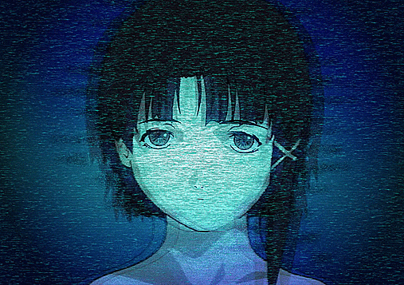

* System Administraion
I have setup my own homelab using proxmox. Inside of that I run multiple services like TrueNAS for storage, Dolphin for streaming, PiHole for ads, etc...
* Programmer
I started being interested when I was little trying to understand how website are built and ran. Throughout the years afterwards I started learning python and some C.
* Languages
My primary langauge is english but when I was younger teen Russian culture and langauge got my attention.